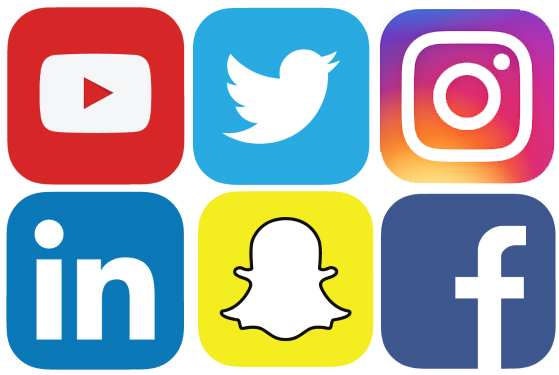

<
Positive Effects
- Helps people keep in touch,reconnect or connect and improve relationships
- Fastest way to spread information
- help catch criminals by law enforcers to use social media
- help people to find jobs
- good for the economy (facebook has added 227 billion dollars to the economy and 4.5 million jobs)
Negatives
- Researchers say that young kids who use social media is causing kids to grow up with more anxiety or depression
- Spread of unreliable false information
- Lack of individual privacy (exposed to government or other corporate intrusions)
- Affecting students grades (distractions, less quality work)
- Cause stress
- Wastes people time
- Less face to face interactions
- Criminals use social media to promote crimes
- Enables cheating on school environments
My Opinion
I think that social media has a negative impact on people
and should not be used. Technology is not only invading personal
privacy but it is also hurting the health of many people. I also feel as
though it is taking away face-to-face socialization that I think is important.
Some studies show that those who spend more time on social media had 2.2 time more
of a risk of having a eating or body image shaming compared to those who use social media less.

Statistics On Different Age Groups
| Teens and Younger |
18-24 Years Old |
30-49 Years Old |
50-64 Years Old |
Over 65 Years Old |
- 32% of teens or younger spend over an hour of watching videos per a day
- 30% watch over 2 hours of videos per a day
- 21% watch over 3 hours of videos per a day
|
- 51% use instagram vs- 34% of 25-29 year olds
- 42% of 18-24 use snapchat and 20% of 25-29 year olds use snapchat
|
- 40% of 30-40 years old use social media compared to 25% of 50-64 year olds
|
|